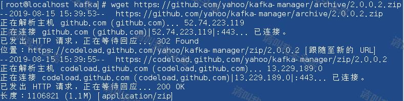
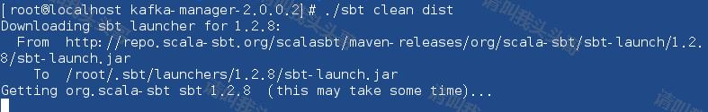
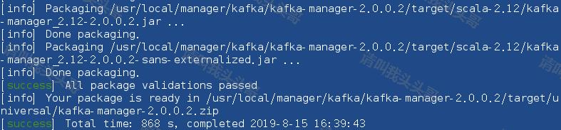
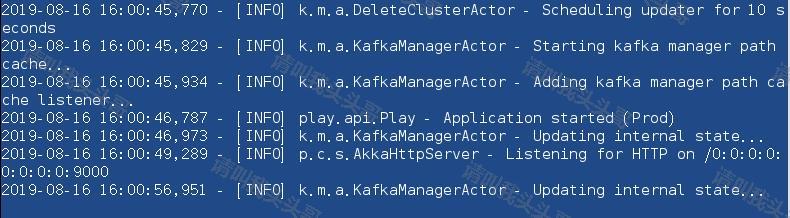
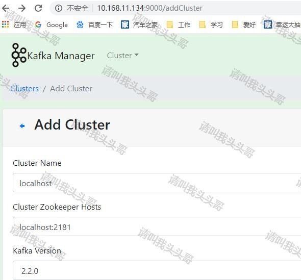

在上一篇文章《Linux安装Kafka》中，已经介绍了如何在Linux安装Kafka，以及Kafka的启动/关闭和创建发话题并产生消息和消费消息。这篇文章就介绍介绍Kafka管理界面(kafka-manager)的安装和使用
kafka-manager 是雅虎开源的apache-kafka管理工具，是用Scala写，所以在web页面进行操作即可。
下载地址：https://github.com/yahoo/kafka-manager/releases
wget https://github.com/yahoo/kafka-manager/archive/2.0.0.2.zip

如果github访问比较慢的朋友，也可以下载已经编译好了的。链接: https://pan.baidu.com/s/1SqJoVlWPwgMSfEeTrFVreQ提取码: 9srz
如果是下载百度网盘的zip包的话，可以直接跳到第4步
unzip 2.0.0.2.zip
解压之后生成目录kafka-manager-2.0.0.2
./sbt clean dist

注意提示"this may take some time",这里真的需要等很久，需要下载一些jar包，我的虚机网速很慢，曾一度以为是卡死了。。。 等了得有40多分钟。

在解压后的conf目录中打开 application.conf文件，修改其中的配置信息，内容为：
kafka-manager.zkhosts="192.168.1.22:2181,192.168.1.23:2181,192.168.1.24:2181"
kafka-manager.zkhosts="192.168.1.22:2181,192.168.1.23:2181,192.168.1.24:2181"
在解压的目录中，使用下面的命令启动Kafka-manager。
bin/kafka-manager

默认情况下端口为9000，你还可以通过下面的命令指定配置文件和端口：
bin/kafka-manager -Dconfig.file=/path/to/application.conf -Dhttp.port=9000
新建Cluster:点击【Cluster】>【Add Cluster】打开如下添加集群配置界面：输入集群的名字（如Kafka-Cluster-1）和 Zookeeper 服务器地址（如localhost:2181），选择最接近的Kafka版本,如下图：

新建Cluster之后即可正常使用。
作 者：请叫我头头哥
出 处：http://www.cnblogs.com/toutou/
关于作者：专注于基础平台的项目开发。如有问题或建议，请多多赐教！
版权声明：本文版权归作者和博客园共有，欢迎转载，但未经作者同意必须保留此段声明，且在文章页面明显位置给出原文链接。
特此声明：所有评论和私信都会在第一时间回复。也欢迎园子的大大们指正错误，共同进步。或者直接私信我
声援博主：如果您觉得文章对您有帮助，可以点击文章右下角【推荐】一下。您的鼓励是作者坚持原创和持续写作的最大动力！